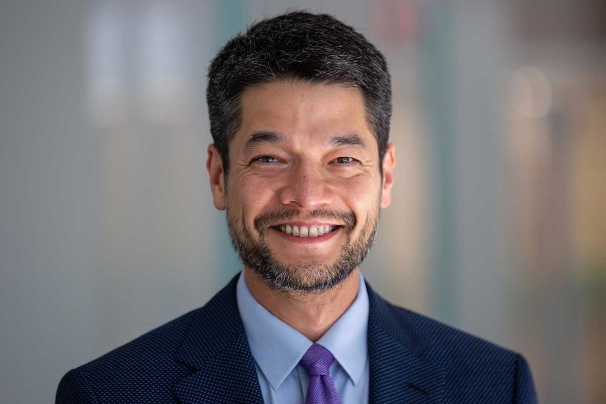
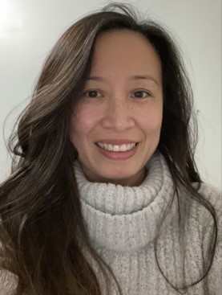
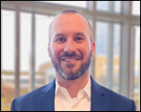
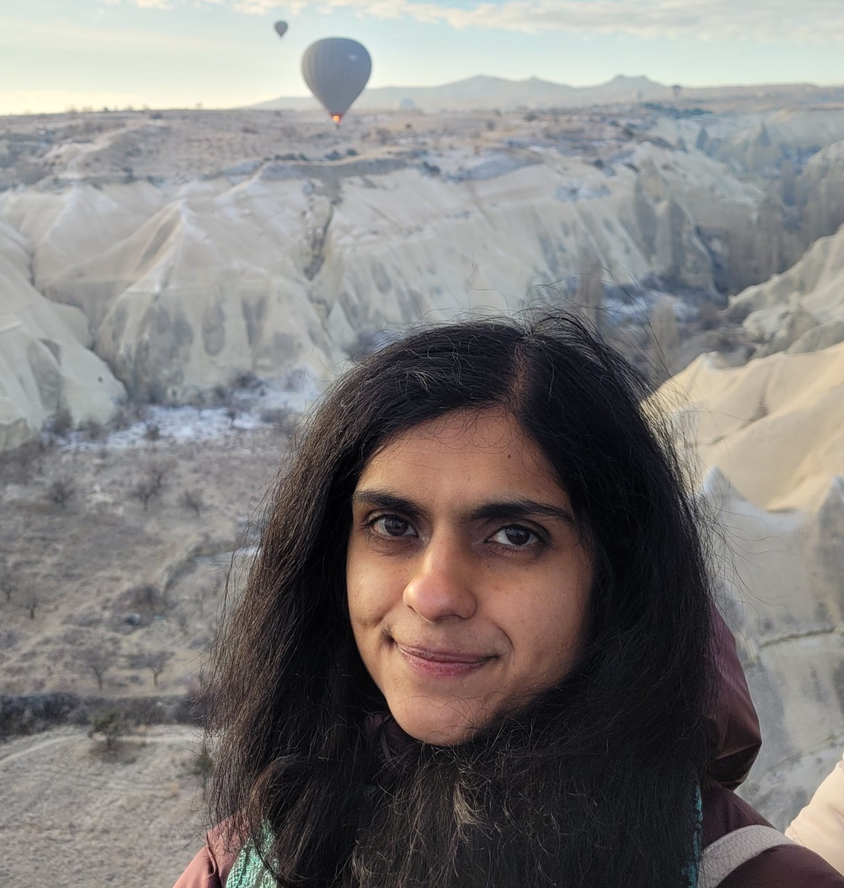
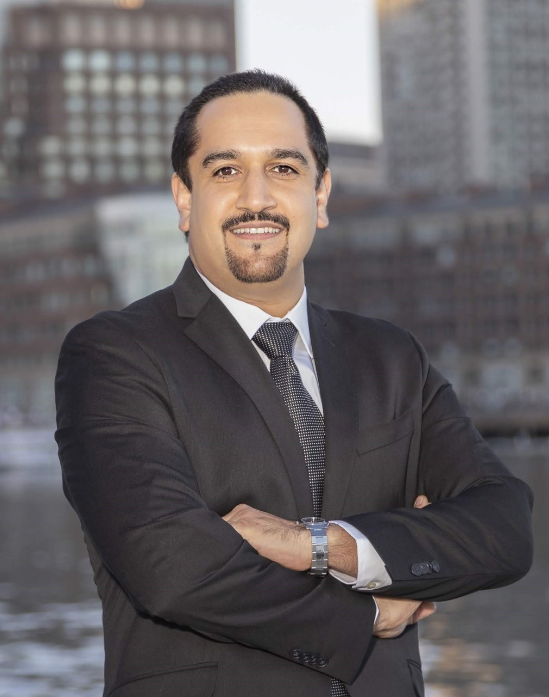
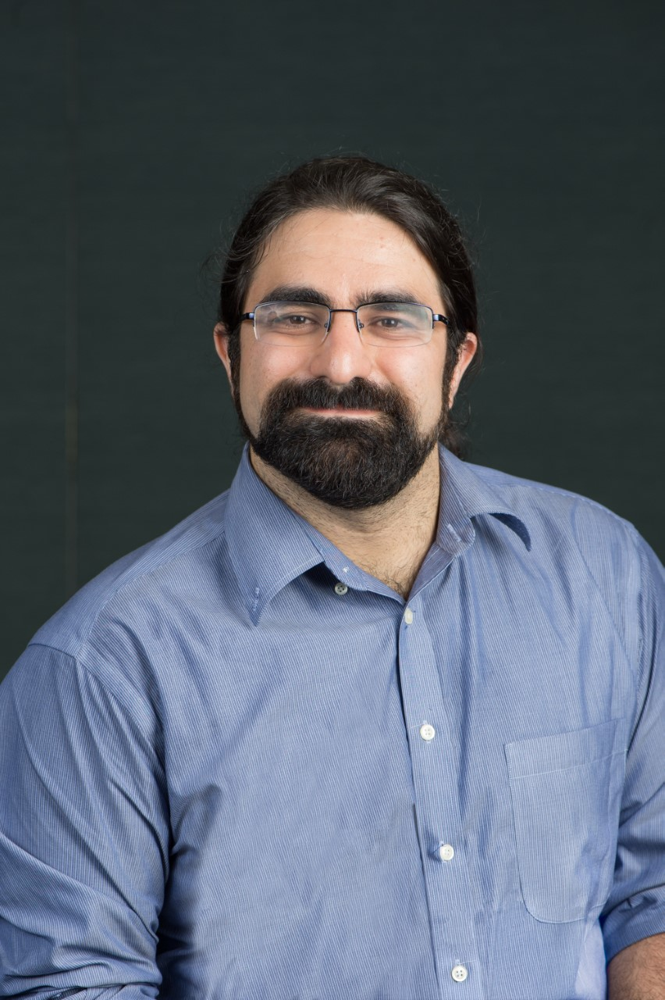

Kevin Fu
Northeastern University
Talk title: Wicked Bizarre Semiconductor Physics of Sensor Security
Abstract: Medical devices, healthcare delivery, and other cyber-physical systems depend on sensors to make safety-critical, automated decisions. My research lab investigates the problem of how to protect cyber-physical systems from adversaries who can maliciously control sensor output by subverting its semiconductor physics. Finding principled, systematic solutions is extremely important to give consumers confidence in innovative medical devices and other emerging technology. Unique to our embedded security research contributions is an emphasis on protecting the longevity of implanted batteries and using software-only approaches to mitigate design flaws in legacy hardware. These contributions were important to creating the field of medical device security; advancing the academic community’s ability to measurably defend against signal injection attacks on sensors; and changing how international regulators evaluate security of consumer products. In this talk, I will highlight academic research on protecting sensor semiconductors from maliciously modulated sound waves, radio waves, and lasers that can compromise software systems in cyber-physical systems such as pacemakers and vaccine cold-chain transportation. I hope to inspire students to work on these fun science and engineering problems.
 Bio: Kevin Fu is Professor of Electrical and Computer Engineering and the Khoury College of Computer Sciences at Northeastern University, where he directs the Archimedes Center for Health Care and Medical Device Cybersecurity. Fu previously served as the nation’s inaugural Acting Director of Medical Device Cybersecurity at U.S. FDA’s Center for Devices and Radiological Health (CDRH) and Program Director for Cybersecurity at the Digital Health Center of Excellence (DHCoE). His research vision is a world where science-based security is built-in by design to all embedded systems: medical devices, healthcare delivery, autonomous transportation, manufacturing, and the Internet of Things. His research lab focuses on analog cybersecurity—how to model and defend against threats to the physics of computation and sensing. Fu is most known for his security research on cryptographic and low-power inventions to defend against vulnerabilities in an implantable cardiac defibrillator. His research led to a decade of revolutionary improvements at medical device manufacturers, global regulators, and international healthcare safety standards bodies. Security solutions resulting from this research foresaw the risks of malicious software affecting hospitals a decade before ransomware began to disrupt clinical workflow worldwide.
Fu has been recognized as an IEEE Fellow, ACM Fellow, AAAS Fellow, Sloan Research Fellow, and MIT Technology Review TR35 Innovator of the Year. He received best paper awards from USENIX Security, IEEE Security & Privacy, and ACM SIGCOMM. His research on pacemaker security received an IEEE Security & Privacy Test of Time Award. He co-founded healthcare cybersecurity startup Virta Labs. Fu has testified in the House and Senate and was commissioned by the National Academy of Medicine for a report on trustworthy medical device software. He serves as a member of the Association for the Advancement of Medical Instrumentation (AAMI) Biomedical Instrumentation & Technology Editorial Board, the ACM Committee on Computers and Public Policy, and the USENIX Security Steering Committee. He chairs the USENIX Security Test of Time Awards Selection Committee. He chaired the USENIX Security PC and served as the inaugural co-chair of the AAMI cybersecurity working group to create the first FDA-recognized consensus standards to improve the security of medical device manufacturing. He founded the Archimedes Center for Healthcare and Device Security, and co-founded the N95decon.org team for emergency reuse decontamination of N95 masks during pandemic shortages. Fu served as a member of the U.S. NIST Information Security and Privacy Advisory Board and federal science advisory groups. Fu received his BS, MEng, and PhD from MIT. He earned a certificate of artisanal bread making from the French Culinary Institute, builds wood-fired brick ovens, and enjoys woodworking.
Ran Canetti
Boston University
Talk title: From NAND to SCOTUS
Abstract: When can we trust the result of a computation? What guarantees do we need to have about the physical system that performed the computation? about the algorithms used? about the data used and its provenance? What aspects of the computation need further scrutiny and what can be taken for granted? What conclusions can be legitimately drawn from the computation and its result and what conclusions would be unfounded or even reckless?
Given the increasingly critical role of data and computation in our society, such questions are routinely asked — and need to be answered — by courts, policymakers, journalists, and practically everyone. Yet, the computing community (industry and academia alike) is surpisingly ill-equipped to provide meaningful answers to these questions. The problem is made worse by the immensely complex and multi-layered nature of modern computing systems, by communication barriers across disciplines, and finally by social misconceptions and legal doctrines that make it hard to pursue meaningful answers to trustworthiness questions, even when such questions are pertinent and critical. Following an attempt to frame the problem and challenge the computing community to address it head on, I will describe some attempts at addressing this challenge in specific contexts: Bluetooth-based proximity detection, using zero-knowledge proofs to reconcile defendant rights to scrutinize evidence with law enforcement priviledge, making the Apple CSAM detection protocol publicly verifiable.
 Bio: Ran Canetti is the Wang professor of Computer Science
at Boston University and the director of the center for Reliable
Information System and Cyber Security. He is a Fellow of the
Association for Computing Machinery and the International Association
for Cryptologic Research, and an incumbent of the RSA
Award in Mathematics. Canetti graduated from the Weizmann Institute of Science,
was a researcher at IBM Watson Research Center, a research scientist
at MIT and a professor at Tel Aviv University. Canetti’s research interests
lie primarily in cryptography and information security, with emphasis
on the design, analysis and use of cryptographic algorithms and
protocols. Recently he has been studying ways for the co-design
of algorithms, law, and policy so as to provide sound foundations
for society in the information age.
Bio: Ran Canetti is the Wang professor of Computer Science
at Boston University and the director of the center for Reliable
Information System and Cyber Security. He is a Fellow of the
Association for Computing Machinery and the International Association
for Cryptologic Research, and an incumbent of the RSA
Award in Mathematics. Canetti graduated from the Weizmann Institute of Science,
was a researcher at IBM Watson Research Center, a research scientist
at MIT and a professor at Tel Aviv University. Canetti’s research interests
lie primarily in cryptography and information security, with emphasis
on the design, analysis and use of cryptographic algorithms and
protocols. Recently he has been studying ways for the co-design
of algorithms, law, and policy so as to provide sound foundations
for society in the information age.
Lei Poo
Analog Devices Inc
 Bio: Lei Poo is Director of Systems Architecture and part of the Systems Engineering team working on the Wireless Battery Monitoring System (wBMS) Product line in the E-Mobility Group under the Automotive Electrification Business Unit in Analog Devices Incorporated. Prior to joining ADI in 2017, Lei has worked as an embedded systems and security architect for different market segments including Smartcard/Smartphones, Set-top boxes, and Secure Disk Drives at different semiconductor companies including NXP, Broadcom and Marvell since 2005. Her experience in secure product certifications spans FIPS 140-2, NIST CAVP, EMVco, Common Criteria and more recently, ISO21434 (Automotive Cybersecurity). Lei received a PhD in Electrical Engineering from Stanford University (2005) and holds 22 US patents in the areas of HW embedded security and algorithms. She is a mom of 2, loves outdoor activities like skiing, but is absolutely afraid of the cold!
Dan Walters
MITRE
 Bio: Dan Walters is a Senior Principal Embedded Security Engineer and Microelectronics Solution Lead in the MITRE Labs department for Electronics System Development and Embedded Security. Walters is leading MITRE’s Microelectronics Horizon Strategy which aims to help stabilize and secure the microelectronics supply chain while positioning the US to lead development of new architectures and manufacturing technologies. Walters previously helped to develop MITRE’s Secure Electronics Lab, which has advanced capabilities for researching implementation security issues such as side-channel leakage, fault induction, and trusted hardware. He has led several research projects for developing tools and techniques to evaluate embedded systems for vulnerabilities. Walters is also a part-time lecturer at the University of Massachusetts-Amherst where he teaches embedded security topics at the graduate level. Walters received his M.S. in Computer Science with a focus on machine learning for security applications from Tufts University; and his B.S.E. in Computer Engineering, B.S.E. in Electrical Engineering, and B.S.E. in Mathematics from the University of Michigan.
Sandhya Koteshwara
IBM
 Bio: Dr. Sandhya Koteshwara is a Staff Research Scientist at IBM T.J. Watson Research Center in Yorktown Heights, New York. Her research interests include hardware security, cryptographic hardware, secure cloud infrastructure and embedded systems security. She is currently working in the cloud infrastructure department towards bringing principles of zero trust to the cloud. She leads the efforts on platform firmware resiliency and Root of Trust for cloud server architectures. Dr. Koteshwara graduated from the University of Minnesota with a doctorate degree in Electrical and Computer Engineering in 2018. Her thesis work focused on hardware obfuscation, authenticated encryption and low-energy machine learning hardware. She has authored several papers and patents and has been selected as a Young Researcher at Heidelberg Laureate Forum 2018 and participant of the Rising Stars in EECS 2017.
Hamed Okhravi
MIT Lincoln Lab
 Bio: Dr. Hamed Okhravi is a Senior Staff member at MIT Lincoln Laboratory, where he leads programs and conducts research in the area of systems security. He is the recipient of two Best Paper Awards (NDSS’22 and RTSS’21), three R&D 100 Awards (2022, 2020, and 2018), the Stratus Award for Cloud Computing (2020), MIT Lincoln Laboratory’s Best Invention Award (2019), Team Award (2015), National Security Agency’s Annual Best Scientific Cybersecurity Paper Award (2015), and MIT Lincoln Laboratory’s Early Career Technical Achievement Award (2014) for his work in computer security. He is an Associate Editor of the IEEE Security & Privacy journal. He has also served three times as the Program Chair of the ACM Moving Target Defense (MTD) workshop, the Poster Chair of the IEEE Secure Development Conference, and on the Organizing Committee of ACSAC. In addition, he has served as a program committee member for a number of top-tier academic conferences and workshops including IEEE Security and Privacy, USENIX Security, ACM CCS, NDSS, RAID, ACM AsiaCCS, DAC, ICCAD, and IEEE SecDev, among others. He has also served on the National Science Foundation’s Panel for the Secure and Trustworthy Cyberspace (SaTC) program. Dr. Okhravi actively contributes to various national, Laboratory, and division-level strategic planning activities, and has led the development of multiple national-level R&D roadmaps. He is a member of DARPA ISAT and serves as the current chair of the DARPA ISAT study on Secure System Design. He has also led the development of multiple systems security technologies that have successfully transitioned outside and inside Lincoln Laboratory. His research interests include cybersecurity, science of security, security evaluation, and operating systems. Dr. Okhravi earned his MS and PhD degrees in electrical and computer engineering from University of Illinois at Urbana-Champaign in 2006 and 2010, respectively.
Sina Shahbazmohamadi
University of Connecticut
 Bio: Dr. Sina Shahbazmohamadi is an assistant professor at University of Connecticut with joint appointments at departments of Mechanical and Biomedical Engineering and institute of material science. He is the founder and director of Reverse Engineering, Fabrication, Inspection and Non-destructive Evaluation (REFINE) which houses state-of-the-art high resolution high throughput imaging capabilities to address key challenges in Microelectronics Reliability, Hardware security assessment and Counterfeit Electronics Detection and prevention. REFINE center is currently collaborating with more than 44 entities in industry and government to address next generation challenges of semiconductor industry.